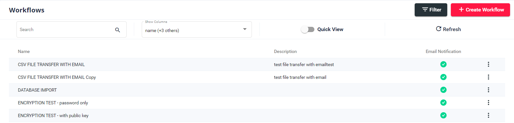
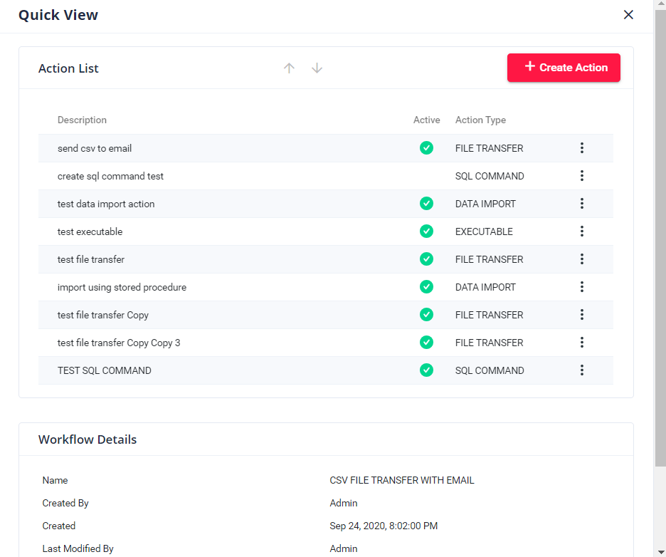

Introduction¶
Task Finder is a web-based tool that can be used to automate a simple task. It can handle different tasks such as data imports, exports, remote/local file transfers, or even run other executables. This tool is built to simplify and centrallized task automation and maintenance.
Task Finder is a .NET Core application with Angular Framework as the frontend. The user management is controlled within the IdentityServer4 (not part of this documentation).
User Interface¶
Task Finder has uniform template for every menu. To use the tool, it will be helpful to familiarize yourself on how you can interact with the tool.
Table Selection¶
On each menu, you will be presented with a main table on the main page. You can do multiple interactions with this page such as search, display columns, refresh and quick view.
When the Quick View is selected, it will display small details on the row you selected.
You may also double-click on a row to open an auto-edit dialog.
Variable Syntax¶
At some point in your workflow, you will have to define your custom variable to support your task.
The variable syntax used by Task Finder is ${VARIABLE_NAME}
System variables are information provided by the system. Below are list of system variables that you can use within Task Finder:
Variable |
Description |
|---|---|
|
provides the current date in default format yyyyMMdd |
|
provides the current date with custom format. example: |
|
full name of the file. Example: C:\\files\sitel_data_file.csv |
|
provides filename of the file including the file extension. example: sitel_data_file.csv |
|
provides filename without the file extension. Example: sitel_data_file |
|
Globally Unique IDentifier computed by Windows. Provides unique identifier for every record. |
|
Unique ID provided for each workflow every time the job runs. |
|
Unique ID provided for each job every time the job runs. JOBPROCESSID is associated with hangfire job id. |
|
Fullname of the expected output file during file transfer. Example for a .wav file converted to .mp3 |
|
workflow folder containing archives |
|
workflow folder containing reports |
|
root folder for workflow containing folders for archives, reports, and logs |
Note
Variables in Task Finder are case-sensitive. Make sure to use the correct format to avoid issues.